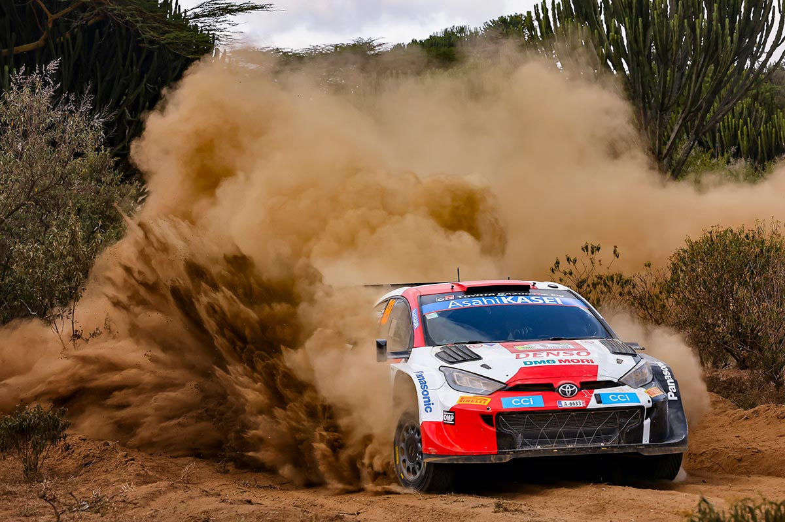
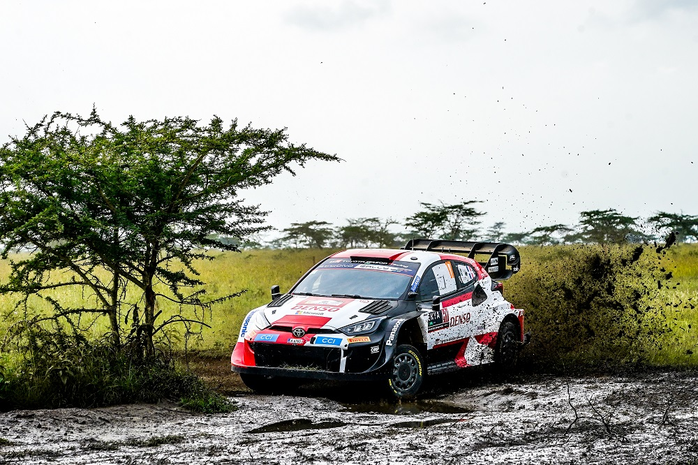
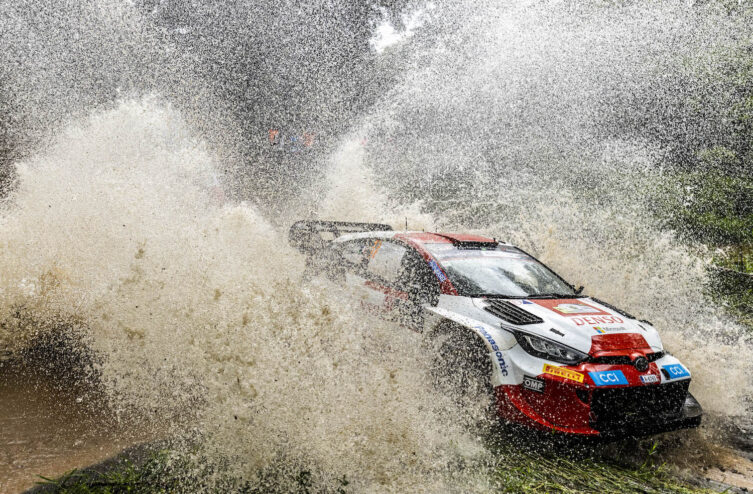
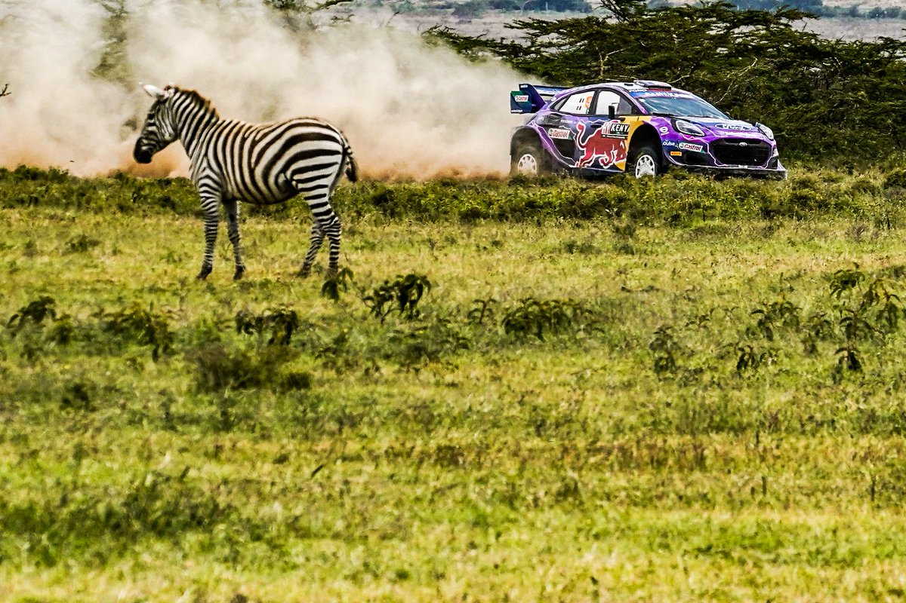
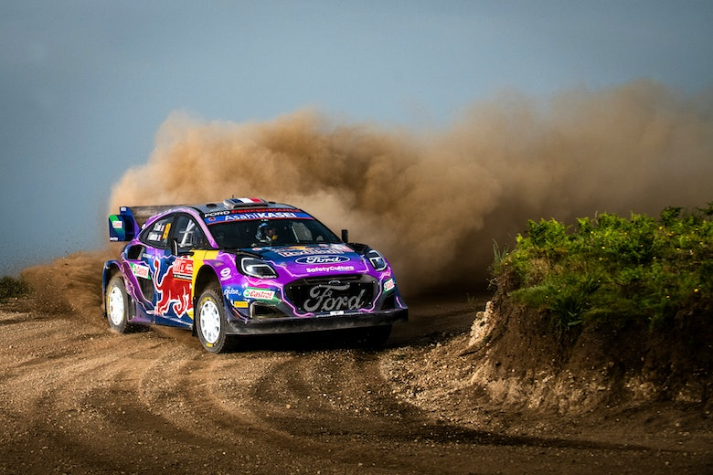
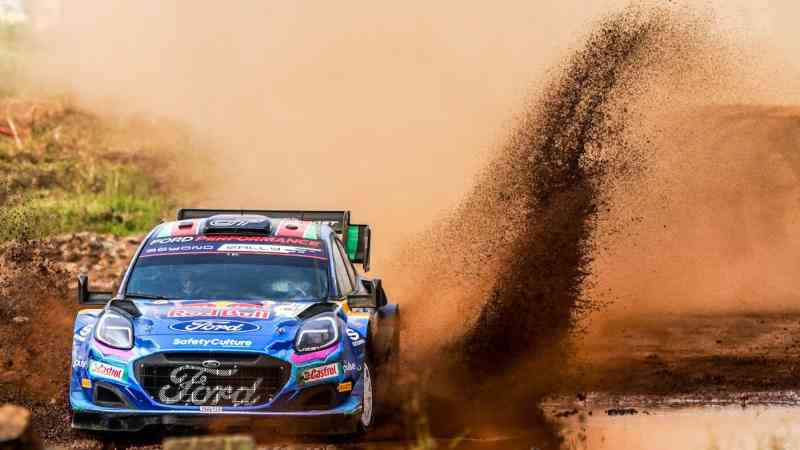
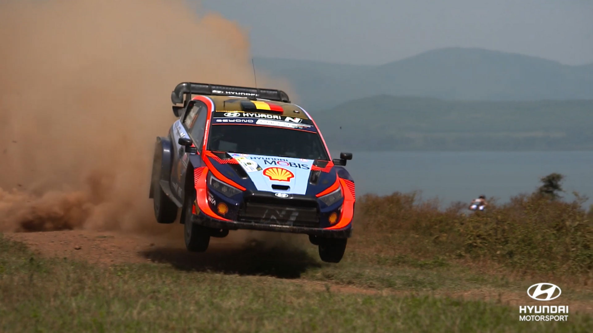
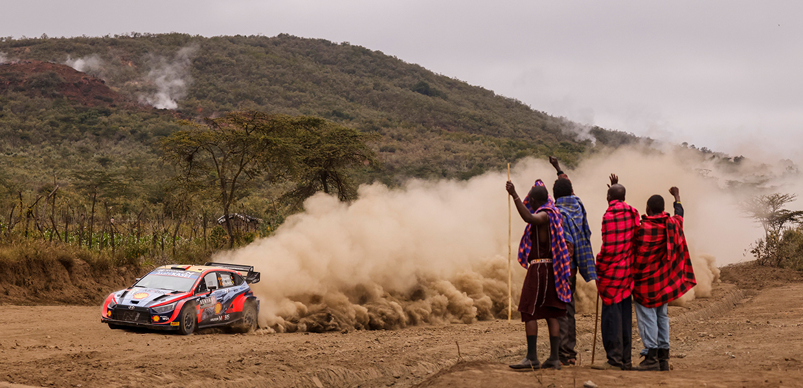
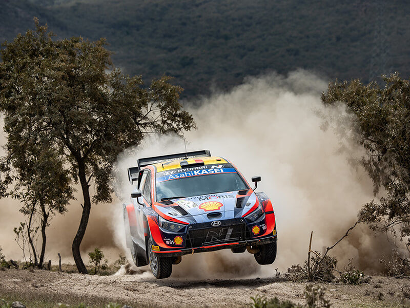

The 2023 Safari Rally (also known as the Safari Rally Kenya 2023) was a motor racing event for rally cars that was held from 22 June to 25 June 2023. It marked the seventieth running of the Safari Rally, and was the seventh round of the 2023 World Rally Championship, World Rally Championship-2 and World Rally Championship-3. The event was based in Naivasha in the Nakuru County, and was contested over nineteen special stages covering a total competitive distance of 356.98 km (221.82 mi).
        